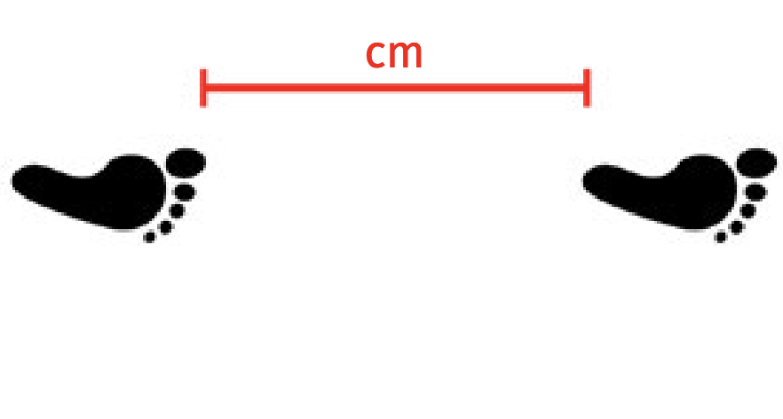
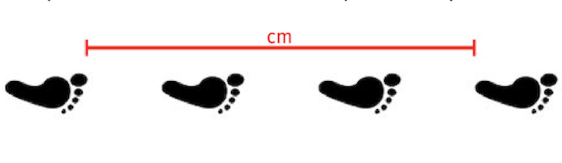
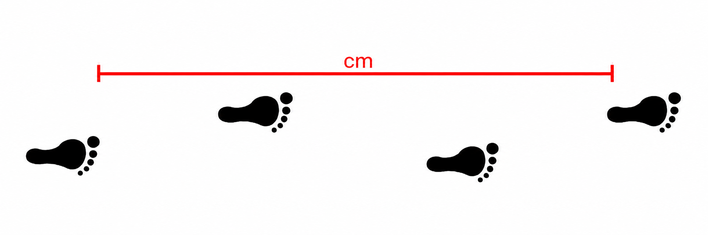
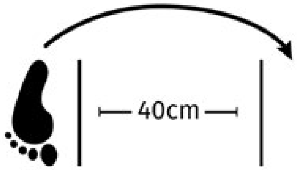
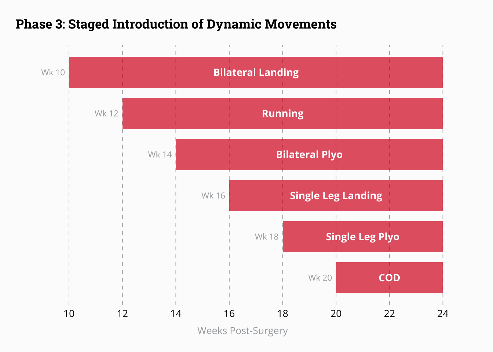

| Phase 3 Criteria | |||
| Outcome Measure | Goal | Score | |
|---|---|---|---|
| Y-Balance | ≥ | 95% | 96% |
| Vestibular Balance (Horizontal) | ≥ | 15s | 15 |
| Vestibular Balance (Vertical) | ≥ | 15s | 15 |
| Single Leg Rise | ≥ | 22 | 18 |
| TrapBar Deadlift | ≥ | 132 kg | 132 |
| Quad Strength | > | 90% | 93% |
| Hamstring Strength | > | 90% | 94% |
| Single Leg Hop | ≥ | 85% | 96% |
| Triple Hop | ≥ | 85% | 96% |
| Triple Cross Over Hop | ≥ | 85% | 96% |
| Side Hop | ≥ | 85% | 96% |
| CMJ Height | ≥ | 23 cm | 31 |
| CMJ Lengthening Asymmetry | < | 15% | 7% |
| CMJ Shortening Asymmetry | < | 20% | 7% |
| Drop and Stick - TTS | < | 0.75s | 1 |
| Drop and Stick - Landing Force | < | 3.5*BM | 3 |
| Drop and Stick - Asymmetry | < | 15% | 0% |
Phase 3: Dynamic Neuromuscular Performance
Upon completing phase 2 the athlete has developed adequate strength and neuromuscular control to begin building capacity to perform more dynamic tasks such as jumping, landing, running, agility, and change of direction. Development of muscular strength and neuromuscular control will continue to progress with the objective now to meet or exceed pre-injury values.
ImportantMost Important Goals — Phase 3
- Muscular Strength Returns towards pre-injury values
- Develop quality jumping/hopping/landing performance while progressing intensity and capacity
- Demonstrate movement competence and confidence in agility and change of direction exercises
Frank Reynolds’s progress towards these goals will be assessed via the criteria seen below. Detailed description of each criteria and the associated testing methodology can be found in the Testing section.
What does the research say?
After achieving sufficient basic neuromuscular function, a period of additional advanced neuromuscular training must begin in order to restore dynamic and explosive neuromuscular performance [1]. This advanced training will involve research-backed progressions of movements that are key during sports such as jumping, hopping, landing, running, agility, and change of direction. These progressions will be guided by criteria targeting outcomes relying on rapid force development such as maximal jump height or hop distance, as well as movement quality assessed both objectively and subjectively by IST practitioners.
Jumping, Hopping, and Landing
The reintegration of dynamic tasks such as jumping and landing in order to re-develop neuromuscular performance and movement quality, while respecting tissue healing, is an important piece of ACL rehab and is known to positively affect functional outcomes [2]. The Aspetar clinical practice guideline published by Kotsifaki et al. [3] included evidence from four randomized clinical trials (RCTs) comparing plyometric, agility, and sport-specific exercises to “usual” rehabilitation protocols. Two studies reported significant improvements in knee function at 6 months [4] and at 1 & 2 years [5] following ACLR in participants who performed a 6-month neuromuscular exercise program, in comparison to a standard muscle strengthening program. One study demonstrated that an 8-week (4-6 months post-ACLR) functional training program which emphasized plyometrics and agility, in comparison to a control program, led to improved performance on a number of hop/jump tests [6]. Another compared 6-weeks of plyometric, eccentric, and combined training and found that combined training was the most effective for improving functional and psycho-social outcomes [7], providing strong evidence for vertical integration [8] during mid-to-late phase ACL rehabilitation. Overall, the literature supports the inclusion of plyometric training to improve subjective function and functional activities.
When programming and implementing these types of exercises, the practitioner must understand the specific loading demands of the various tasks and the athlete’s capacity to tolerate these loading demands. The integration of jumping, hopping and landing into the rehab, aligned with the ACL functional recovery process is guided by the four stage plyometric progression model proposed by Buckthorpe and Della Villa [2]. This program, outlined in Figure 1 considers the task and it’s associated intensity and complexity, the required movement quality and strength to perform the tasks and specific monitoring of responses and criteria.
Progression through the program can be described in terms of:
Bilateral -> Unilateral
Increasing intensity and specificity
Increasing entry velocity
Decreasing ground contact time (GCT)
Linear (vertical -> horizontal -> lateral) —> Multi-planar tasks
Compliant surfaces -> Stiff surfaces
{kind=link}
The entry criteria for stage 1 of this framework would be satisfied if the athlete has met Phase 2 criteria of the CSI Pacific ACL protocol. It is possible that stage 1 jumping/landing progressions could be introduced prior to full completion of Phase 2 criteria (i.e. isometric knee extension LSI > 70% but < 75%), and this may be considered by practitioners on a case-by-case basis, with a conservative approach being the default recommendation. These criteria are crucial for determining the introduction of dynamic exercises, as the athlete is likely to exhibit persistent knee extensor weakness which could result in biomechanical compensatory strategies [9]. At roughly 3 months post surgery, it can be expected that athletes may off-load the knee joint during squatting exercise by over-loading the un-affected side (inter-limb) or using a hip-dominant strategy (intra-limb) [10]. Furthermore these compensation strategies have been demonstrated to persist until 5 months post-ACLR, highlighting the importance of a gradual introduction of more dynamic movements and on thoughtful task selection in order to develop optimal motor patterning [11].
Stage 2 and 3 plyometric progressions fit well within Phase 3 of the current protocol, as we seek to develop bilateral power, unilateral eccentric control, and neuromuscular function during more dynamic tasks. Stage 4 of the plyometric progressions will be discussed in more depth in the Phase 4: RTS chapter of this protocol
Running
At this stage of the rehab, it is likely that the athlete will meet criteria to begin a progressive return to running (RTR). This is a key element in the RTS/RTP journey [12] and an important aspect of the transition from impairment-focused tasks of early-phase rehab to the dynamic, functional tasks of late-phase rehab [13]. The RTR decision is an important one, since a pre-mature introduction of running can increase the risk of re-injury [14], while delayed progress may hinder motivation and psychological readiness to RTS [15].
The best evidence available to aid in the return-to-run decision comes from a 2018 scoping review which extracted data from 201 studies, each reporting at least one criterion for permitting adult patients to commence running post-ACLR [13]. Unsurprisingly, the most commonly reported criterion was time since surgery, with the median time of RTR being 12 weeks post-op (IQR = 3.3, range = 5-39 weeks) with RTR being defined as running at slow speeds (8-10 km/h). The interquartile range of 3.3 gives us a rough idea that during a typical rehabilitation, an athlete can expect to RTR somewhere within 9-15 weeks post-op. Interestingly, only 18% of studies (36 / 201) reported clinical, strength or performance-based criteria for RTR. The most frequently reported criteria were: full knee range of motion, pain <2 on a visual analogue scale, isometric quadriceps LSI > 70% and hop test LSI > 70%. A settled, asymptomatic knee (full ROM, no pain, no swelling) should be considered non-negotiable prior to allowing any form of running. The capacity of the knee to tolerate loading is also crucial, but with more nuance as to the exact definition of criteria.
“We suggest that these clinical criteria: pain <2 on a visual analogue scale, 95% knee flexion ROM, 0º knee extension ROM, no effusion/swelling, should be used as ‘non-negotiable’ clinical milestones for RTR” [13]
Some studies have suggested that jogging on the treadmill can be commenced once knee extensor LSI reaches > 70% [16,17] while others suggest > 80% [18]. Given the lack of conclusive results at this time, our recommendation is that 70% LSI be the criteria for introducing very low intensity running drills, while 80% LSI is required in order to begin running at a volume and intensity which could achieve cardiovascular adaptation [3]. This allows for a continuous and careful progression of volume, intensity and complexity of movement.
{kind=link}
Figure 2 shows an example of a RTR progression [18], with options for treadmill or track based progression, which was used to inform the CSI Pacific RTR program. In this framework, progression from one level to the next occurs when the athlete is able to complete the assigned activity with no increase in effusion or pain. Weekly progression is capped at a maximum of 2 levels and at least 48 hours of recovery should be allowed between each running workout.
Ultimately, in order to RTR, the athlete must satisfy the following criteria:
| RTR Criteria | |||
| Outcome Measure | Goal | Score | |
|---|---|---|---|
| Passive Knee Extension | ≤ | 0° | 0 |
| Passive Knee Flexion | ≥ | 125° | 127 |
| Swelling | ≤ | 1 | 0 |
| Quad Strength | > | 80% | 93% |
| CMJ Lengthening Asymmetry | < | 20% | 7% |
| SL Pogos | ≥ | 20 | |
Agility and Change of Direction
Multi-directional dynamic movements that require the ability to accelerate, decelerate and change direction are an important focus of Phase 3 rehab, which must be observed distinctly from simple forward running. COD manoeuvres such as cutting and pivoting are associated with ACL loading and injury risk due to the large multiplanar forces generated at the knee joint during these movements [19]. Despite this importance, fewer than one in eight studies included in a 2025 scoping review included any formal assessment of COD or agility, with most ACLR protocols continuing to rely almost exclusively on strength and single-leg hop performance [20]. Additionally, while direct evidence for specific COD training interventions in ACLR populations remains limited, the framework for progression is supported by biomechanical research in athletic populations [19] and expert clinical consensus [17,21].
In Phase 3, athletes are introduced to controlled acceleration and deceleration mechanics, lateral movement patterns, and reactive quickness tasks in a predictable, lower-stakes environment. Based on the ten task-based progression provided by Buckthorpe et al [17], this controlled introduction of COD work will occur later in Phase 3, once the athlete has demonstrated some proficiency in forward running, unilateral landing/deceleration and unilateral plyometrics. Exercises will begin with simple movements and short angle changes to limit the loading on the knee. COD movements will initially be performed slowly (i.e. with lower approach speeds) thus reducing body momentum and deceleration demand. A scoping review of 22 intervention studies found that balance training and COD technique modification, focusing on reducing lateral trunk lean, narrowing foot plant distance, and increasing knee flexion at ground contact were the most effective gym-based strategies for reducing hazardous knee joint loading during directional changes, producing small-to-moderate effect sizes [19]. Notably, resistance training alone and generic agility drills performed without coach feedback did not reduce COD-related knee joint loads, underscoring the importance of monitoring and correcting movement quality at this stage. Ultimately, the emphasis on controlled COD with high quality, symmetrical movement will build the neuromuscular foundation for more sport-specific, field-based training in Phases 4 and 5.
Testing
Each card below contains a detailed description of the tests to be conducted during this phase of rehab.
Y-Balance
Composite Score
- The composite score combines Anterior, Postero-Medial and Postero-Lateral. Our current calculation places equal weight on each score. The displayed score represents the average score on the injured limb as a percentage of the average score on the non-injured limb. placing equal weight on each score. Currently we are not multiplying by limb length so this is not necessarily comparable between athletes. Composite score will be used for Phase Criteria, while individual Y-Balance scores can be found in the more detialed Phase Progress reports.
Criteria: ≥ 95%
Repetitions: 3 Each
Calculation: A+PL+PM/3*100

Vestibular Balance (Horizontal)
Cooper & Hughes Sports Vestibular Balance Test 1: Side to Side
Subjects stand on one leg with a small amount of flexion in the hip, knee and ankle, and place their hands on their waist.
At a rate of 60 beats per minute, subjects repeatedly turn their head from side to side (70-90 degree turn) for a period of 15 seconds. Vision needs to be inline with head position (no visual fixing).
- Vision needs to be inline with head position (no visual fixing). The test is passed if subjects can maintain single leg stance and do not take their hands off their waist for both assessments
Criteria: ≥ 15s
Repetitions: 1
Vestibular Balance (Vertical)
Cooper & Hughes Sports Vestibular Balance Test 2: Up and down
Subjects stand on one leg with a small amount of flexion in the hip, knee and ankle, and place their hands on their waist.
At a rate of 60 beats per minute, subjects repeatedly tilt their head up and down (looking floor to ceiling) for a period of 15 seconds.
- Vision needs to be inline with head position (no visual fixing). The test is passed if subjects can maintain single leg stance and do not take their hands off their waist for both assessments
Criteria: ≥ 15s
Repetitions: 1
Single Leg Rise
Subjects sit on a chair (or a plinth) with test leg bent to 90°, and 10cm from edge of chair. (Culvenor et al., 2016 & Thorstensson et al., 2004)
- With hands behind the back, the subject aims to stand up from the sitting position, and sit down as many times as possible.
Record the total number of valid repetitions performed. There is no symmetry criteria, the athlete must perform 22 reps on each leg to meet this criteria.
Criteria: ≥ 22
Repetitions: 1
TrapBar Deadlift
Set up the TrapBar on a lifting platform, using blocks as needed so that the subject’s knees are flexed to 90 degrees when placing tension on the bar without lifting it. Progressively perform single repetitions until a 1RM is established.
- Record the maximum load in kg. The target load for graduation from this phase is 1.5x BM. This criteria may vary based on initial training status pre-injury.
Criteria: ≥ 132 kg
Calculation: Max
Single Leg Press
TBD
- TBD
Criteria: ≥ 132 kg
Calculation: Max
Quad Strength
Isometric Strength at 90°
- Seated with hip and knees flexed at 90°. Dynamometer placed on the anterior aspect of the shank, proximal to the ankle joint. Target score to complete this phase is 75% LSI compared to un-injured leg.
Criteria: > 90%
Repetitions: 2
Calculation: Max
Hamstring Strength
Isometric Strength at 90°
- Seated with hip and knees flexed at 90°. Dynamometer placed on the anterior aspect of the shank, proximal to the ankle joint. Target score to complete this phase is 75% LSI compared to un-injured leg.
Criteria: > 90%
Repetitions: 2
Calculation: Max
Single Leg Hop
Athlete stands on one leg and hops as far forward as possible, landing on the same leg.
- Measure from toe at take-off to heel at landing. Arms are free to swing. The athlete must demonstrate control by sticking the landing for a minimum of 3s.
The score for each limb is calculated as a mean of 2 successful reps. A limb symmetry index is calculated by dividing the mean distance (in cms) of the involved limb by the mean distance of the noninvolved limb then multiplying by 100
Criteria: ≥ 85%
Repetitions: 2
Calculation: Mean

Triple Hop
Athletes stands on one leg and hops forwards three consecutive times on one foot, sticking the final landing.
- Measure from toe at take off to heel at landing. Arms are free to swing. The athlete must demonstrate control by sticking the final landing for a minimum of 3s.
The total distance is measured, and the mean of 2 valid tests is recorded. A limb symmetry index is calculated by dividing the mean distance (in cms) of the involved limb by the mean distance of the noninvolved limb then multiplying by 100.
Criteria: ≥ 85%
Repetitions: 2
Calculation: Mean

Triple Cross Over Hop
This test is performed on a course consisting of a 15cm marking strip on the floor which is 6m long. The athlete is required to hop three consecutive times on one foot going in a medial to lateral to medial direction, crossing the strip on each hop.
- Measure from toe at take-off to heel at landing. Arms are free to swing. The athlete must demonstrate control by sticking the final landing for a minimum of 3s.
The total distance is measured, and the average (mean) of 2 valid hop tests is recorded. A limb symmetry index is calculated by dividing the mean distance (in cms) of the involved limb by the mean distance of the noninvolved limb then multiplying by 100.
Criteria: ≥ 85%
Repetitions: 2
Calculation: Mean

Side Hop
Subjects stands on test leg with hands behind the back and jumps from side to side between two parallel strips of tape, placed 40 cm apart on the floor. (Gustavsson et al., 2006)
- Subject jumps as many times as possible during 30sec. The number of successful jumps performed, without touching the tape is recorded. A limb symmetry index is calculated by dividing the total reps performed on the involved limb by the total reps performed on the noninvolved limb then multiplying by 100.
Criteria: ≥ 85%
Repetitions: 1

Countermovement Jump
Standing still on the force plates with hands on hips. Jump as high as you can.
- Metrics of interest at this stage include jump height, lengthening (eccentric) bilateral asymmetry, shortening (concentric) asymmetry. Other metrics may be examined by the practitioner to allow deeper understanding of the jump, and inform exercise programming.
Criteria: ≥ 80%
Repetitions: 5
Calculation: Mean
Drop and Stick
Step forward off a 50cm box placed 15cm behind the force plates. Land on both legs in a squat with thighs parallel to the floor. Land soft and freeze like a statue. Hold the position for five seconds.
- Ensure that the athlete steps straight forward and does not lower themselves from the box.
Criteria: < 0.75s
Repetitions: 5
Calculation: Mean
The Program
Below you will find links to your training programs.
The example weekly schedule shown in Figure 3 continues to be built around 3x per week targeted strength sessions with 48 hours of recovery between sessions. These workouts now include plyometrics and/or gym-based SAQ and COD work, which is typically programmed to take place after preparation and before strength work. Non-ACLR workouts continue to provide stimulus on days between the main lifts, while prioritizing recovery of the involved limb. ESD workouts will increase in intensity to prepare the athlete for sport-related activities in Phase 4 and 5. These will likely fit well in the same session as non-ACLR lifts but some athletes may respond better to performing ESD sessions as separate workouts throughout the week. Home-based mobility and active recovery continue to be important in the mornings and evenings. Active recovery such as going for short walks or bike rides may be tolerated well at this point.
{kind=link}
During phase 3, maximal strength training will remain an important part of the program, and will continue to build in intensity. The introduction of dynamic movements during this phase should roughly follow this task-based progression [17] seen in Figure 4. The actual time-frame of introduction is only an estimate and is subject to change based on progression through Phase and RTR criteria.

References
1. Buckthorpe M. Optimising the late-stage rehabilitation and return-to-sport training and testing process after ACL reconstruction. Sports Medicine [Internet]. 2019;49:1043–58. https://doi.org/10.1007/s40279-019-01102-z
2. Buckthorpe M, Della Villa F. Recommendations for plyometric training after ACL reconstruction a clinical commentary. International Journal of Sports Physical Therapy. 2021;16:879–95. https://doi.org/10.26603/001c.23549
3. Kotsifaki R, Korakakis V, King E, Barbosa O, Maree D, Pantouveris M, et al. Aspetar clinical practice guideline on rehabilitation after anterior cruciate ligament reconstruction. British Journal of Sports Medicine [Internet]. 2023;57:500–14. https://doi.org/10.1136/bjsports-2022-106158
4. Risberg MA, Holm I, Myklebust G, Engebretsen L. Neuromuscular training versus strength training during first 6 months after anterior cruciate ligament reconstruction: A randomized clinical trial. Physical Therapy [Internet]. 2007;87:737–50. https://doi.org/10.2522/ptj.20060041
5. Risberg MA, Holm I. The Long-term Effect of 2 Postoperative Rehabilitation Programs After Anterior Cruciate Ligament Reconstruction: A Randomized Controlled Clinical Trial With 2 Years of Follow-Up. The American Journal of Sports Medicine [Internet]. 2009;37:1958–66. https://doi.org/10.1177/0363546509335196
6. Souissi S, Wong DP, Dellal A, Croisier J-L, Ellouze Z, Chamari K. Improving functional performance and muscle power 4-to-6 months after anterior cruciate ligament reconstruction. Journal of Sports Science & Medicine [Internet]. 2011;10:655–64. https://pmc.ncbi.nlm.nih.gov/articles/PMC3761516/
7. Kasmi S, Zouhal H, Hammami R, Clark CCT, Hackney AC, Hammami A, et al. The effects of eccentric and plyometric training programs and their combination on stability and the functional performance in the post-ACL-surgical rehabilitation period of elite female athletes. Frontiers in Physiology [Internet]. 2021;12. https://doi.org/10.3389/fphys.2021.688385
8. Mujika N, Halson S, Burke LM, Balagué G, Farrow D. An integrated, multifactorial approach to periodization for optimal performance in individual and team sports. 2018;538–61. https://doi.org/10.1123/ijspp.2018-0093
9. Palmieri-Smith RM, Lepley LK. Quadriceps Strength Asymmetry After Anterior Cruciate Ligament Reconstruction Alters Knee Joint Biomechanics and Functional Performance at Time of Return to Activity. The American Journal of Sports Medicine [Internet]. 2015;43:1662–9. https://doi.org/10.1177/0363546515578252
10. Sigward SM, Chan MSM, Lin PE, Almansouri SY, Pratt KA. Compensatory strategies that reduce knee extensor demand during a bilateral squat change from 3 to 5 months following anterior cruciate ligament reconstruction. Journal of Orthopaedic and Sports Physical Therapy. 2018;48:713–8. https://doi.org/10.2519/jospt.2018.7977
11. Wolpert DM, Diedrichsen J, Flanagan JR. Principles of sensorimotor learning. Nature Reviews Neuroscience [Internet]. 2011;12:739–51. https://doi.org/10.1038/nrn3112
12. Ardern CL, Glasgow P, Schneiders A, Witvrouw E, Clarsen B, Cools A, et al. 2016 Consensus statement on return to sport from the First World Congress in Sports Physical Therapy, Bern. British Journal of Sports Medicine [Internet]. 2016;50:853–64. https://doi.org/10.1136/bjsports-2016-096278
13. Rambaud AJM, Ardern CL, Thoreux P, Regnaux JP, Edouard P. Criteria for return to running after anterior cruciate ligament reconstruction: A scoping review. British Journal of Sports Medicine. 2018;52:1437–44. https://doi.org/10.1136/bjsports-2017-098602
14. Kyritsis P, Bahr R, Landreau P, Miladi R, Witvrouw E. Likelihood of ACL graft rupture: not meeting six clinical discharge criteria before return to sport is associated with a four times greater risk of rupture. British Journal of Sports Medicine [Internet]. 2016;50:946–51. https://doi.org/10.1136/bjsports-2015-095908
15. Ardern CL, Taylor NF, Feller JA, Whitehead TS, Webster KE. Psychological Responses Matter in Returning to Preinjury Level of Sport After Anterior Cruciate Ligament Reconstruction Surgery. The American Journal of Sports Medicine [Internet]. 2013;41:1549–58. https://doi.org/10.1177/0363546513489284
16. Buckthorpe M, Della Villa F. Optimising the ‘Mid-Stage’ Training and Testing Process After ACL Reconstruction. Sports Medicine [Internet]. 2020;50:657–78. https://doi.org/10.1007/s40279-019-01222-6
17. Buckthorpe M, Tamisari A, Villa FD. A ten task-based progression in rehabilitation after acl reconstruction: From post-surgery to return to play a clinical commentary. International Journal of Sports Physical Therapy. 2020;15:611–23. https://doi.org/10.26603/ijspt20200611
18. Adams D, Logerstedt D, Hunter-Giordano A, Axe MJ, Snyder-Mackler L. Current concepts for anterior cruciate ligament reconstruction: A criterion-based rehabilitation progression. Journal of Orthopaedic & Sports Physical Therapy [Internet]. 2012;42:601–14. https://doi.org/10.2519/jospt.2012.3871
19. Dos’Santos T, Thomas C, Comfort P, Jones PA. The effect of training interventions on change of direction biomechanics associated with increased anterior cruciate ligament loading: A scoping review. Sports Medicine (Auckland, Nz) [Internet]. 2019;49:1837–59. https://doi.org/10.1007/s40279-019-01171-0
20. Wright A, Reid D, Potts G. Return to sport (RTS) tests and criteria following an anterior cruciate ligament (ACL) reconstruction (ACLR): A scoping review. The Knee [Internet]. 2025;57:179–99. https://doi.org/10.1016/j.knee.2025.08.010
21. Taberner M, Allen T, Cohen DD. Progressing rehabilitation after injury: Consider the ‘control-chaos continuum’. British Journal of Sports Medicine [Internet]. 2019;53:1132–6. https://doi.org/10.1136/bjsports-2018-100157